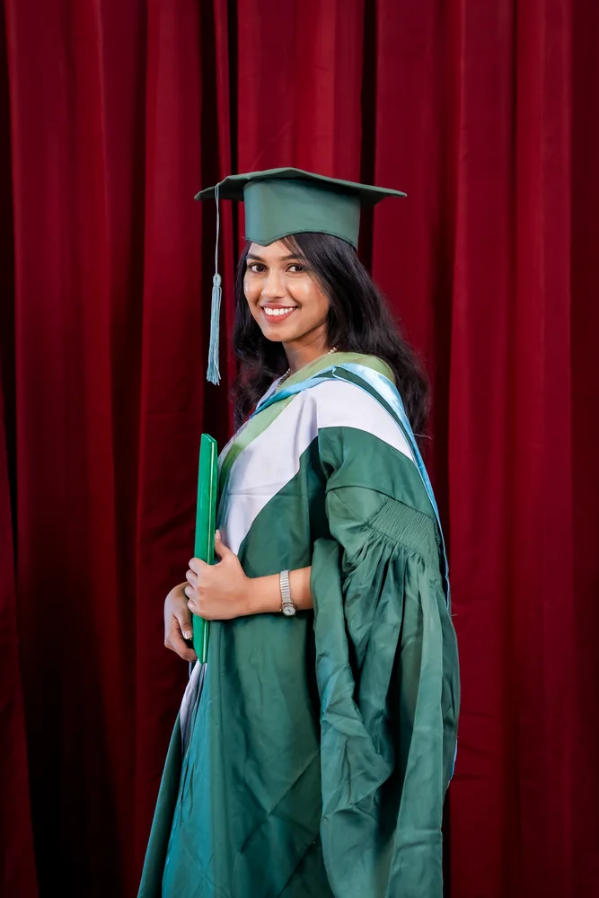

I am a researcher and a Computer Science & Engineering graduate of the Islamic University of Technology (IUT) , Bangladesh. I currently work as a Research Intern strong> at ELITE Research Lab , focusing on the reliability of AI systems.
My research explores trustworthy AI, computer vision, and multimodal learning , with an emphasis on understanding model failures, unsupported predictions, and the gap between benchmark performance and real-world reliability.
My interests include vision-language model evaluation , image-grounded answerability and abstention , distribution shift, robustness, and calibration , particularly in medical AI and underrepresented languages.

News
Oct 2026 First-author paper BILAL-BENCH accepted at the Muslims in ML Workshop, NeurIPS 2026.
Jan 2026 Joined ELITE Research Lab LLC strong> as a Research Intern.
Jul 2024 Achieved 1st Runner-Up at Women in Tech BD , organized by Huawei.
Mar 2024 Became the Champion of IUTCS presents “The Great Web Off” .
Earlier news and achievements
Feb 2024 Placed 29th in the HerWILL AI for Equality Datathon .
Dec 2023 Achieved 4th place at the Blockchain Olympiad Bangladesh .
Aug 2023 Ranked 32nd in DL Sprint 2.0 at BUET CSE Fest.
Jul 2023 Placed 30th in the Bengali.AI ASR for Regional Dialects Datathon .
May 2023 Ranked among the top 60 globally in ICPC Algo Queen .
Apr 2023 Achieved 9th place at CodeRush 1.0 Intra-IUT Programming Contest .
Feb 2023 Placed 26th in the National Girls’ Programming Contest .
Dec 2022 Achieved 6th place at the IUT Intra-University Programming Contest .
Aug 2022 Placed 17th in the Ada Lovelace National Girls’ Programming Contest .
Dec 2021 Placed 18th in the Ada Lovelace National Girls’ Programming Contest .
Aug 2021 Placed 32nd in the National Girls’ Programming Contest .
Apr 2021 Selected among the top 50 in Banglalink Ennovators 3.0 .
Feb 2021 Selected among the top 10 in GP Explorers 2.0 .
Publications & manuscripts Peer-reviewed and submitted research
2026
Do Open Language Models Invent Scripture? BILAL-BENCH: Benchmarking Islamic-Source Fabrication in Bengali
Sabah Nushra , Md Kishor Morol
Accepted · Muslims in ML Workshop at NeurIPS 2026
A 240-question Bengali benchmark evaluating fabricated religious-source claims, confidence, and abstention across seven open-weight language models.
2026
CRuSS: Cross-domain Reliability under Shift and Stress for Medical Image Classification
Moinul Hossain, Sabah Nushra , Md Kishor Morol, Liew Tze Hui
Submitted · Biomedical Signal Processing and Control
Introduces a five-axis score combining clean adequacy, cross-domain retention, shifted calibration, global corruption resilience, and class-local resilience; evaluated across eight brain-MRI classifiers.
2026
Knowing When Not to Answer: A Multi-Domain Benchmark and Lightweight Alignment-Based Abstention for Medical VQA
Asir Saadat, Sabah Nushra , Rohaan Nadeem, Nakul Poudel, Bipasha Kundu, Cristian Linte
Under review · NAACL 2027
Builds a 45,942-pair benchmark spanning five medical imaging modalities and uses BioMedCLIP image–text alignment to support abstention on visually unsupported questions.
2026
Leakage-Controlled Structure-Preserving Augmentation and Template-Aware Evaluation for Bangla Symptom-Based Disease Prediction
Sabah Nushra , Shovon Samanta Turzo, Moinul Hossain, Md Kishor Morol, Dip Nandi
Under review · ICECE 2026
Studies Bangla symptom-based disease prediction using leakage-aware evaluation, train-only augmentation, ensembles, and SHAP/LIME explanations.
Ongoing research
Understanding How Vision Models Fail Graph-based study of error severity, stability under distribution shift, and model complementarity through structured failure transitions.
Beyond the Leaderboard: Bangla Cyberbullying Moderation Evaluating calibration, selective prediction, rare-class behavior, and robustness to realistic Bangla language perturbations.
Previous research projects
Enhancing Few-Shot Medical Image Segmentation with Refined Prototypes Prototype refinement using self- and cross-masked attention; experiments on abdominal CT/MRI and cardiac MRI. Supervised by Dr. Hasanul Kabir .
Bengali Text Style Transfer using Fine-Tuned Transformer Models BanglaT5 experiments for sentiment and formality transformations using a 12,000-pair dataset. Supervised by Sabbir Ahmed .
Selected projects Code and applied research
Multimodal evaluation
A 170-query Snakes & Ladders benchmark probing structural visual reasoning in seven open-weight vision-language models.
Image restoration
Photo restoration and colorization using denoising, scratch removal, and deep-learning-based colorization.
Machine learning education
Interactive explanations of regression, SVMs, clustering, decision trees, PCA, and neural networks.
Object detection
Helmet detection with a web interface and experiments using YOLOv5, YOLOv6, and YOLOv8.
Remote sensing
Multi-sensor analysis using hyperspectral and electromagnetic induction measurements.
Computer vision
Image stylization through VGG-19 feature optimization in TensorFlow.
Social impact
A web application to connect people facing medical emergencies with nearby blood donors.
Research & professional experience
2026 – Present
Research Intern ELITE Research Lab LLC · New York, USA
Research on trustworthy and multimodal AI, medical VQA, model robustness, distribution shift, calibration, and evaluation methodology.
Aug – Dec 2024
Cybersecurity Engineer Beetles Cyber Security Ltd. · Dhaka, Bangladesh
Security monitoring, vulnerability analysis, remediation support, system hardening, and incident documentation.
Education
2020 – 2024
B.Sc. in Computer Science & Engineering Islamic University of Technology (IUT), Gazipur
CGPA: 3.25/4.00
Earlier education HSC · Govt Azizul Haque College, Bogura · 2017–2019 · GPA 5.00
SSC · Bogura Cantonment Public School & College · 2005–2017 · GPA 5.00
Recognition
1st Runner-Up · Huawei Women in Tech BD (2024)Champion · IUTCS “The Great Web Off” (2024)4th place · Blockchain Olympiad Bangladesh (2023)Top 60 globally · ICPC Algo Queen (2023)
Additional awards 29th · HerWILL AI for Equality Datathon (2024)
32nd · DL Sprint 2.0, BUET CSE Fest (2023)
30th · Bengali.AI ASR for Regional Dialects (2023)
9th · CodeRush 1.0 Intra-IUT Programming Contest (2023)
26th · National Girls’ Programming Contest (2023)
6th · IUT Intra-University Programming Contest (2022)
17th and 18th · Ada Lovelace National Girls’ Programming Contest (2022, 2021)
32nd · National Girls’ Programming Contest (2021)
Top 50 · Banglalink Ennovators 3.0 (2021)
Top 10 · GP Explorers 2.0 (2021)
Academic service & leadership